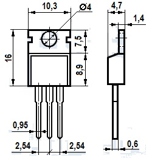
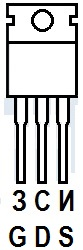
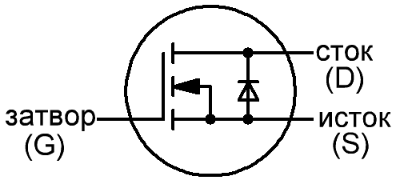

Транзистор IRF840
Транзистор IRF840 мощный, n-канальный, МОП (MOSFET). Предназначен для использования в источниках вторичного электропитания, в регуляторах, стабилизаторах и преобразователях, схемах управления электродвигателями и других блоках и узлах радиоэлектронной аппаратуры.

Выпускаются в пластмассовом корпусе с жесткими выводами. Маркировка транзистора указывается на корпусе. Тип корпуса - ТО-220AB.


| Параметр | Значение |
|---|---|
| Максимальное напряжение сток-исток Uси max, В | 500 |
| Максимальный ток сток-исток при 25°С Iси max, А | 8 |
| Напряжение затвор-исток Uзи max, В | ±20 |
| Сопротивление канала в закрытом состоянии Rси, мОм | 850 |
| Рассеиваемая мощность Pси max, Вт | 125 |
| Пороговое напряжение на затворе, В | 4 |
| Диапазон рабочих температур | от -55 до +150 °C |
Справочный лист транзистора IRF840
Аналоги транзистора IRF840
зарубежные:
- 2SK1574
- 2SK1864
- 2SK554
- 2SK555
- BUZ41
- BUZ42
- D84ER2
- ECG2385
- IRF841
- ST8NA50
отечественные:
- КП777А
- КП840
Источники
joyta.ru - Транзистор IRF840: параметры, цоколевка, аналог, datasheet